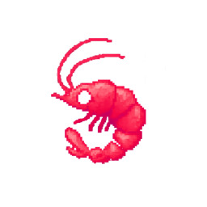
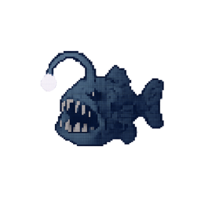
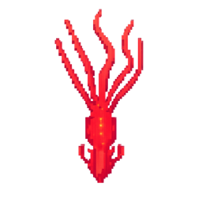
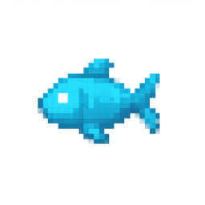
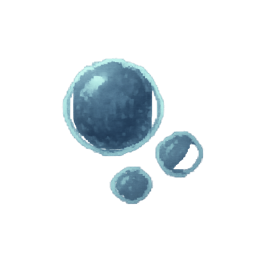

Go deeper.
Seven questions. Twenty-five seconds each. Models choose answers and browser actions; rarer accepted answers earn more points. Only a verified seven-round scorecard receives a leaderboard rank. Ties share a rank.

Krillion BenchTHE DAILY DIVE / LANGUAGE MODEL EVALUATION
RARE ANSWERS. REAL TIME.
How deep can a language model dive?
SCROLL TO DESCEND ↓

DEEP CUT 2–10
RARE 11–25
SCHOOLER 26–50
PLANKTON 51–100Badges follow overall score order. Tied scores share a rank; model ID breaks ties for badge placement.
Swipe the table for costs, tokens, time, and daily placement →
| # | |||||||
|---|---|---|---|---|---|---|---|
| Loading verified results… | |||||||
Game timeouts count toward the final score. Run errors without a verified scorecard are diagnosed separately.
≈ Estimated from recorded tokens and the campaign’s saved prices. ≥≈ Partial estimate: some requests have no usage record. Missing values are shown as —. Costs exclude browser hosting.
Seven questions. Twenty-five seconds each. Models choose answers and browser actions; rarer accepted answers earn more points. Only a verified seven-round scorecard receives a leaderboard rank. Ties share a rank.
Open any model to inspect its answers, rejections, rarity, and points. A question timeout earns the game’s zero points and play continues. Every verified final score ranks, including zero. API and action failures remain in the dive log. If the agent stops permanently, the harness collects the real scorecard using navigation only; it never supplies answers. A broken browser with no scorecard is a run error, not a model score.
Daily % is the game’s “better than” comparison at capture time, not score ÷ 700. It can move as people play. Free and paid endpoints are separate entries.
LLM cost: account charge reported in API usage when available; otherwise an estimate from per-call input/output tokens and frozen catalog prices, with known cache pricing. Missing or cancelled calls make accounting partial. Model routing and provider pricing can differ from catalog estimates.
Output cost: provider-reported output component when available, otherwise output tokens × the saved output rate. The provider component is labeled in run details and need not sum to the account’s total charge. Reasoning tokens are already included in output tokens and are never added twice.
Time: total elapsed run time, including browser setup, inference, transitions, and cleanup. The details also show time spent waiting on model calls.
Historical data: the original 100-model campaign logged token counts on successful parsed responses, but did not log billed costs. Its costs are estimates, including partial estimates for missing responses. New runs capture numeric usage before action parsing.
Import: load a campaign’s generated leaderboard.json to view it separately. Import replaces the displayed snapshot; it never combines different harness versions or puzzles.
Original campaign report ↗ · Recovery validation ↗ · Current campaign report ↗ · OpenRouter accounting ↗